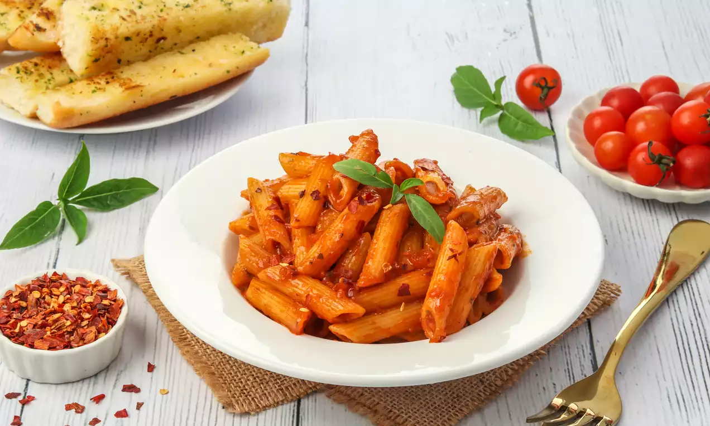

CREAMY PASTA
Creamy White Sauce Pasta is a delicious Italian favorite made with boiled penne pasta tossed in a smooth, velvety garlic-parmesan sauce along with colorful sautéed bell peppers and Italian seasonings.

Ingredients
- Penne or your choice of pasta
- Butter and all-purpose flour (for roux)
- Milk
- Minced garlic
- Bell peppers and sweet corn
- Grated cheese (Mozzarella/Parmesan)
- Oregano and red chili flakes
Procedure
- Boil pasta in salted water until al dente, then drain.
- Sauté garlic and veggies in a little butter, then set aside.
- Melt butter, add flour, and whisk for 1 minute to form a roux.
- Gradually pour in milk while whisking to avoid lumps.
- Simmer sauce until thick; stir in seasonings and cheese.
- Add cooked pasta and sautéed veggies to the sauce.
- Toss well and serve warm with garlic bread.